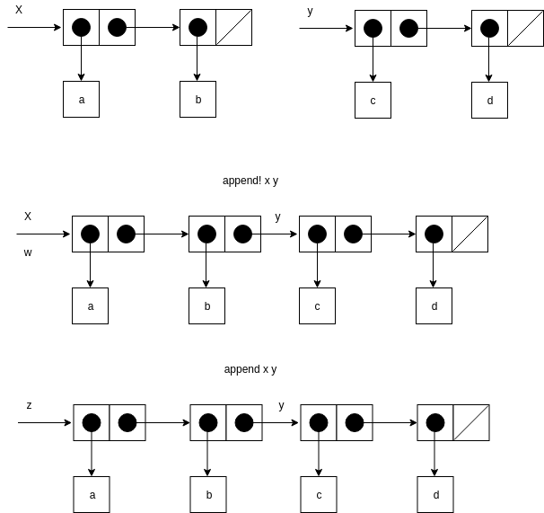
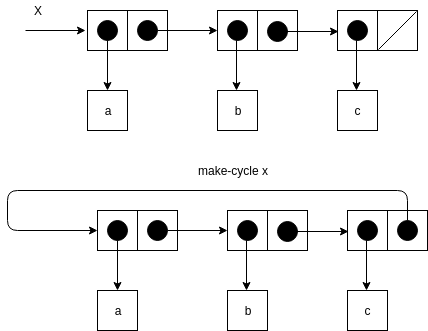
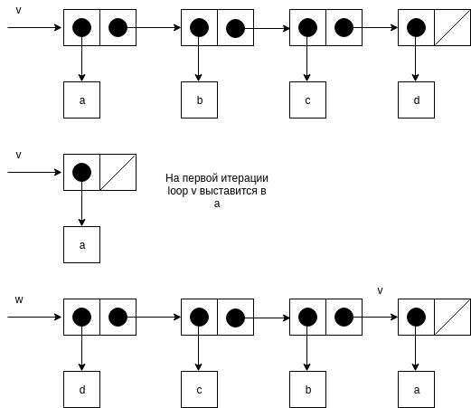
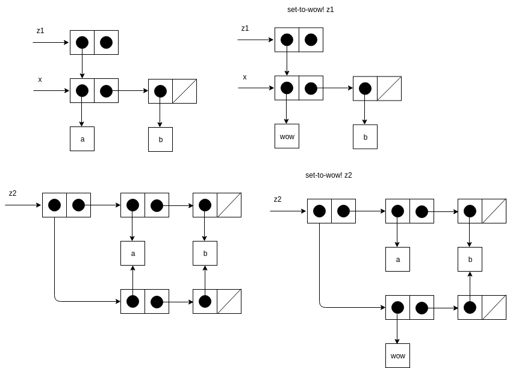
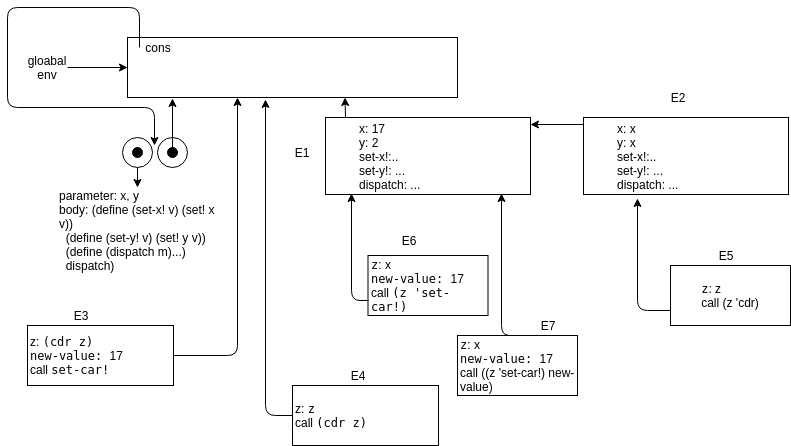
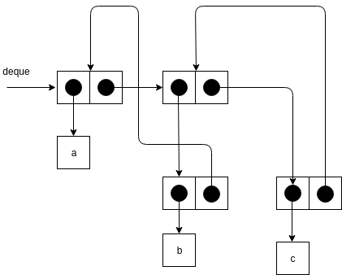
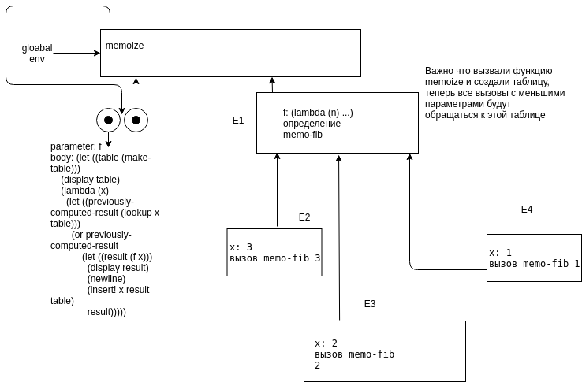

SICP 3.3 Моделирование с изменяемыми данными.
Упражнение 3.12
Следующая процедура добавления элементов в список была приведена в главе 2.2.1
(define (append x y)
(if (null? x)
y
(cons (car x) (append (cdr x) y))))
Процедура append! похожа, но применяет mutator вместо конструктора.
(define (append! x y)
(set-cdr! (last-pair x) y)
x)
(define (last-pair x)
(if (null? (cdr x))
x
(last-pair (cdr x))))
Рассмотрим следующие команды
(define x (list 'a 'b))
(define y (list 'c 'd))
(define z (append x y))
z
(a b c d)
(cdr x)
<response>
(define w (append! x y))
w
(a b c d)
(cdr x)
<response>
Какие значения в пропущенных <response>. Нарисуйте структуру box-and-pointer что бы пояснить ответ.
;; в первом случае
(b) ;; ссылка на x убирается формируется новый список, к которому добавляем y
;; во втором случае
(b c d)
;; x и w псевдонимы, к которым в конце добавляется y.

Упражнение 3.13
Рассмотрим следующую процедуру make-cycle, которая использует last-pair описанную ранее.
(define (make-cycle x)
(set-cdr! (last-pair x) x)
x)
Нарисуйте box-and-pointer диаграмму, которая показывает структуру объекта z, полученного следующим образом
(define z (make-cycle (list 'a 'b 'c)))

Что произойдет если выполнить (last-pair z)?
Произойдет бесконечный поиск последнего элемента в цикле.
Упражнение 3.14
Следующая процедура часто применяется, несмотря на запутанность.
(define (mystery x)
(define (loop x y)
(if (null? x)
y
(let ((temp (cdr x)))
(set-cdr! x y)
(loop temp x))))
(loop x '()))
Объясните что mastery делает. Допустим v это список
(define v (list 'a 'b 'c 'd))
(define w (mystery v))
Нарисуйте диаграмму для v и для w после выполнения w. Что будет выведено для v и w?

v будет ссылаться на список с единственным значением a. А w будет содержать перевернутый список значений v.
Упражнение 3.15
Нарисуйте диаграмму для структур после применения set-to-wow!
(define x (list 'a 'b))
(define z1 (cons x x))
(define z2 (cons (list 'a 'b) (list 'a 'b)))
(define (set-to-wow! x)
(set-car! (car x) 'wow)
x)
(set-to-wow! z1)
(set-to-wow! z2)

Упражнение 3.16
Бен решил написать процедуру которая подсчитывает количество пар в любом списке. "Это просто. Количество пар, это количество в car плюс количество в cdr плюс один, что бы учесть текущую пару."
(define (count-pairs x)
(if (not (pair? x))
0
(+ (count-pairs (car x))
(count-pairs (cdr x))
1)))
Покажите, что эта процедура ошибочна. В частности, приведите примеры структур ровно из трех пар, для которых процедура вернет 3; вернет 4; вернет 7; вообще никогда не завершится.
(define x (cons 1 '()))
(define y (cons 2 x))
(define z (cons 3 y))
(count-pairs z) ;; 3
(define x (cons 1 '()))
(define y (cons x x))
(define z (cons y 99999))
(count-pairs z) ;; 4
(define x (cons 1 '()))
(define y (cons x x))
(define z (cons y y))
(count-pairs z) ;; 7
(define x (cons 1 '()))
(define y (cons 2 x))
(define z (cons 3 y))
(set-cdr! x z)
(count-pairs z) ;; Inf
Упражнение 3.17
Напишите правильную версию процедуры count-pairs из упражнения 3.16, которая возвращает число различных пар в любой структуре. (Подсказка: просматривайте структуру, поддерживая при этом вспомогательную структуру, следящую за тем, какие пары уже были посчитаны.)
(define (include? item positions)
(if (null? positions)
false
(or (equal? item (car positions)) (include? item (cdr positions)))))
(define (count-uniq-pairs x checked)
(if (or (not (pair? x)) (include? x checked))
0
(let ((checked (cons x checked)))
(if (equal? (car x) (cdr x))
(+ (count-uniq-pairs (car x) checked) 1)
(+ (count-uniq-pairs (car x) checked)
(count-uniq-pairs (cdr x) checked)
1)))))
(define x (cons 1 '()))
(define y (cons 2 x))
(define z (cons 3 y))
(count-uniq-pairs z '())
(define x (cons 1 '()))
(define y (cons x x))
(define z (cons y 99999))
(count-uniq-pairs z '())
(define x (cons 1 '()))
(define y (cons x x))
(define z (cons y y))
(count-uniq-pairs z '())
(define x (cons 1 '()))
(define y (cons 2 x))
(define z (cons 3 y))
(set-cdr! x z)
(count-uniq-pairs z '())
Упражнение 3.18, 3.19
Напишите процедуру, которая рассматривает список и определяет, содержится ли в нем цикл, то есть, не войдет ли программа, которая попытается добраться до конца списка, продвигаясь по полям cdr, в бесконечный цикл. Такие списки порождались в упражнении 3.13.
Переделайте упражнение 3.18, используя фиксированное количество памяти. (Тут нужна достаточно хитрая идея.)
Еще есть широко известные алгоритмы поиска повторов в последовательностях.
(define (floyed l)
;; кролик бежит в два раза быстрее черепахи
;; если цикл есть то он обагнав его на круг встретятся в некоторой точке
;; запоминаем позицию кролика
(define (same-point? tl hl)
(if (eq? (car tl) (car hl))
(begin
(display (car tl))
(display (car hl))
hl
)
(same-point? (cdr tl) (cdr (cdr hl)))))
;; далее бегут с равной минимальной скоростью
;; кролик начинает с позиции предведущей встречи, а черепаха сначала
;; они встретятся равно в начале цикла. потому что иначе получим
;; противоречие что цикл есть.
(define (start-repeat? tl hl index)
(if (eq? (car tl) (car hl))
(cons tl index)
(start-repeat? (cdr tl) (cdr hl) (+ index 1))))
;; далее просто находим период, черепаха стоит, а кролик бежит пока позиции вновь не совпадут.
(define (period? tl hl period)
(if (eq? (car tl) (car hl))
period
(period? tl (cdr hl) (+ period 1))))
(define hl (same-point? (cdr l) (cdr (cdr l))))
(define start-repeat (start-repeat? l hl 0))
(define tl (car start-repeat))
(define index (cdr start-repeat))
(define period (period? tl (cdr tl) 1))
(cons index period))
(define (make-cycle2 x)
(set-cdr! (last-pair x) (cdr (cdr x)))
x)
(define z (make-cycle (list 'a 'b 'c 'd 'e 'f 'g 'h)))
z ;Value: (a b . #0=(c d e f . #0#))
(floyed z)
;Value (2 . 4)
Порядок роста по месту 1.
Упражнение 3.20
Нарисуйте диаграммы окружений, изображающие выполнение последовательности выражений с помощью вышеприведенной процедурной реализации пар.
(define (cons x y)
(define (set-x! v) (set! x v))
(define (set-y! v) (set! y v))
(define (dispatch m)
(cond ((eq? m 'car) x)
((eq? m 'cdr) y)
((eq? m 'set-car!) set-x!)
((eq? m 'set-cdr!) set-y!)
(else (error "Неопределенная операция -- CONS" m))))
dispatch)
(define (car z) (z 'car))
(define (cdr z) (z 'cdr))
(define (set-car! z new-value)
((z 'set-car!) new-value)
z)
(define (set-cdr! z new-value)
((z 'set-cdr!) new-value)
z)
(define x (cons 1 2))
(car x)
(cdr x)
(define z (cons x x))
(car (car z))
(set-car! (cdr z) 17)
(car x) ;; 17

Упражнение 3.21
при добавлении элемента, ссылка на новый элемент сохраняется в два места, поэтому при распечатке выводится не только список элементов, но и вторая ссылка.
(define (print-queue queue)
(car queue))
Упражнение 3.22
Вместо того, чтобы представлять очередь как пару указателей, можно построить ее в виде процедуры с внутренним состоянием. Это состояние будет включать указатели на начало и конец обыкновенного списка. Таким образом, make-queue будет иметь вид
(define (make-queue)
(let ((front-ptr ...)
(rear-ptr ...))
(определения внутренних процедур)
(define (dispatch m) ...)
dispatch))
Закончите определение make-queue и реализуйте операции над очередями с помощью этого представления.
(define (make-queue)
(let ((front-ptr '())
(rear-ptr '()))
(define (empty-queue?) (null? front-ptr))
(define (front-queue)
(if (empty-queue?)
(error "FRONT вызвана с пустой очередью")
(car front-ptr)))
(define (insert item)
(let ((new-pair (cons item '())))
(cond ((empty-queue?)
(set! front-ptr new-pair)
(set! rear-ptr new-pair)
front-ptr)
(else
(set-cdr! rear-ptr new-pair)
(set! rear-ptr new-pair)
front-ptr))))
(define (delete)
(cond ((empty-queue?)
(error "DELETE! вызвана с пустой очередью"))
(else
(set! front-ptr (cdr front-ptr))
front-ptr)))
(define (dispatch m)
(cond ((eq? m 'delete) delete)
((eq? m 'insert) insert)))
dispatch))
Упражнение 3.23
Дек (deque, double-ended queue, «двусторонняя очередь») представляет собой последовательность, элементы в которой могут добавляться и уничтожаться как с головы, так и с хвоста. На деках определены такие операции: конструктор make-deque, предикат empty-deque?, селекто- ры front-deque и rear-deque, и мутаторы front-insert-deque!, rear-insert-deque!, front-delete-deque! и rear-delete-deque!. Покажите, как представить дек при помощи пар, и напишите реализацию операций .Все операции должны выполняться за Θ(1) шагов.

(define (make-deque)
(let ((front-ptr '())
(rear-ptr '()))
(define (empty-queue?) (or (null? front-ptr) (null? rear-ptr)))
(define (front-queue)
(if (empty-queue?)
(error "FRONT вызвана с пустой очередью")
(car front-ptr)))
(define (rear-insert item)
(let ((new-list (cons (cons item '()) '())))
(cond ((empty-queue?)
(set! front-ptr new-list)
(set! rear-ptr front-ptr)
front-ptr)
(else
(set-cdr! (car new-list) rear-ptr)
(set-cdr! rear-ptr new-list)
(set! rear-ptr new-list)
front-ptr))))
(define (front-insert item)
(let ((new-list (cons (cons item '()) '())))
(cond ((empty-queue?)
(set! front-ptr new-list)
(set! rear-ptr front-ptr)
front-ptr)
(else
(set-cdr! new-list front-ptr)
(set-cdr! (car front-ptr) new-list)
(set! front-ptr new-list)
front-ptr))))
(define (front-delete)
(cond ((empty-queue?)
(error "DELETE! вызвана с пустой очередью"))
(else
(set! front-ptr (cdr front-ptr))
(when (not (null? front-ptr))
(set-cdr! (car front-ptr) '()))
front-ptr)))
(define (rear-delete)
(cond ((empty-queue?)
(error "DELETE! вызвана с пустой очередью"))
(else
(set! rear-ptr (cdr (car rear-ptr)))
(when (not (null? rear-ptr))
(set-cdr! rear-ptr '()))
rear-ptr)))
(define (rear)
rear-ptr)
(define (front)
front-ptr)
(define (dispatch m)
(cond ((eq? m 'front-delete) front-delete)
((eq? m 'rear-delete) rear-delete)
((eq? m 'rear) rear)
((eq? m 'front) front)
((eq? m 'rear-insert) rear-insert)
((eq? m 'front-insert) front-insert)
))
dispatch))
(define q (make-deque))
((q 'rear-insert) 'a)
((q 'rear-insert) 'b)
((q 'rear-insert) 'c)
;; #0=((a) . #1=((b . #0#) (c . #1#)))
((q 'front-delete))
((q 'rear-delete))
Упражнение 3.24
В реализациях таблиц в этом разделе ключи всегда проверяются на равенство с помощью equal? (который, в свою очередь, зовется из assoc). Это не всегда то, что нужно. Например, можно представить себе таблицу с числовыми ключами, где не требуется точного совпадения с числом, которое мы ищем, а нужно только совпадение с определенной допустимой ошибкой. Постройте конструктор таблиц make-table, который в качестве аргумента принимает процедуру same-key? для проверки равенства ключей. Make-table должна возвращать процедуру dispatch. через которую можно добраться до процедур lookup и insert! локальной таблицы. В реализациях таблиц в этом разделе ключи всегда проверяются на равенство с помощью equal? (который, в свою очередь, зовется из assoc). Это не всегда то, что нужно. Например, можно представить себе таблицу с числовыми ключами, где не требуется точного совпадения с числом, которое мы ищем, а нужно только совпадение с определенной допустимой ошибкой. Постройте конструктор таблиц make-table, который в качестве аргумента принимает процедуру same-key? для проверки равенства ключей. Make-table должна возвращать процедуру dispatch. через которую можно добраться до процедур lookup и insert! локальной таблицы.
(define (make-table comparator)
(let ((local-table (list '*table*)))
(define (assoc key records)
(cond ((null? records) false)
((comparator key (caar records)) (car records))
(else (assoc key (cdr records)))))
...
))
(define operation-table (make-table (lambda (x y) (and (<= x (+ y tolerance))
(>= x (- y tolerance))
))))
Упражнение 3.25
Обобщая случаи одно- и двумерных таблиц, покажите, как можно реализовать таблицу, в которой элементы хранятся с произвольным количеством ключей и различные значения могут храниться с различным количеством ключей. Процедуры lookup и insert! должны принимать на входе список ключей, с которыми требуется обратиться к таблице.
(define (make-table)
(let ((local-table (list '*table*)))
(define (print)
(display local-table))
(define (assoc key records)
(cond ((null? records) false)
((equal? key (caar records)) (car records))
(else (assoc key (cdr records)))))
(define (lookup key . keys)
(define (sub-lookup table key keys)
(let ((record (assoc key (cdr table))))
(if record
(if (null? keys)
(cdr record)
(sub-lookup record (car keys) (cdr keys)))
false))
)
(sub-lookup local-table key keys)
)
(define (insert! value key . keys)
(define (sub-insert table value key keys)
(let ((record (assoc key (cdr table))))
(if record
(if (null? keys)
(set-cdr! record value)
(sub-insert record value (car keys) (cdr keys)))
(if (null? keys)
(set-cdr! table (cons (cons key value) (cdr table)))
(let ((sub-table (list key)))
(set-cdr! table (cons sub-table (cdr table)))
(sub-insert sub-table value (car keys) (cdr keys))
)
)
))
)
(sub-insert local-table value key keys)
'ok)
(define (dispatch m)
(cond ((eq? m 'lookup-proc) lookup)
((eq? m 'insert-proc!) insert!)
((eq? m 'print) print)
(else (error "Unknown operation -- TABLE" m))))
dispatch
)
)
(define operation-table (make-table))
(define get (operation-table 'lookup-proc))
(define put (operation-table 'insert-proc!))
(define print (operation-table 'print))
(print)
(put 2 'test 'two)
(get 'test 'two)
(put 1 'test)
(get 'test)
Упражнение 3.26
При поиске в таблице, как она реализована выше, приходится просматривать список записей. В сущности, это представление с неупорядоченным списком из раздела 2.3.3. Для больших таблиц может оказаться эффективнее организовать таблицу иначе. Опишите реализацию таблицы, в которой записи (ключ, значение) организованы в виде бинарного дерева, в предположении, что ключи можно каким-то образом упорядочить (например, численно или по алфавиту).
тут не стал делать общие операции для нескольких типов таблиц, но добавляя теги мы можем этого добиться, далее просто реализация хранения таблиц в виде бинарных деревьев, где к ветви дерева добавляется четвертое поле, которое хранит значение.
(define (entry tree) (car tree))
(define (left-branch tree) (cadr tree))
(define (right-branch tree) (caddr tree))
(define (value-tree tree) (cadddr tree))
(define (make-tree entry left right value)
(list entry left right value))
(define (make-table)
;; добавляем тег 'bin
(define (empty-bin)
(list '*bin*))
(define (sub-bin? record)
(equal? (car (value-tree record)) '*bin*))
(define (adjoin-set x set value)
(cond ((null? set) (make-tree x '() '() value))
((= x (entry set)) set)
((< x (entry set))
(make-tree (entry set)
(adjoin-set x (left-branch set) value)
(right-branch set)
(value-tree set)
))
((> x (entry set))
(make-tree (entry set)
(left-branch set)
(adjoin-set x (right-branch set) value)
(value-tree set)))))
(let ((local-bin (empty-bin))) ;; вместо списка бинарное дерево
(define (print)
(display local-bin))
(define (assoc-bin given-key tree)
(cond ((null? tree) false)
((equal? given-key (entry tree)) tree)
((> given-key (entry tree)) (assoc-bin given-key (right-branch tree)))
((< given-key (entry tree)) (assoc-bin given-key (left-branch tree)))))
(define (lookup key . keys)
(define (sub-lookup bin key keys)
(let ((record (assoc-bin key (cdr bin))))
(if record
(if (null? keys)
(value-tree record)
(if (sub-bin? record)
(sub-lookup (value-tree record) (car keys) (cdr keys))
false))
false))
)
(sub-lookup local-bin key keys)
)
(define (insert! value key . keys)
(define (sub-insert bin value key keys)
(let ((record (assoc-bin key (cdr bin))))
(display record)
(if record
(if (null? keys)
(set-cdr! record (list (left-branch record)
(right-branch record)
value))
(sub-insert (cadddr record) value (car keys) (cdr keys)))
(if (null? keys)
(set-cdr! bin (adjoin-set key (cdr bin) value))
(let ((sub-bin (empty-bin)))
(set-cdr! bin (adjoin-set key (cdr bin) sub-bin))
(sub-insert sub-bin value (car keys) (cdr keys))
)
)
))
)
(sub-insert local-bin value key keys)
'ok)
(define (dispatch m)
(cond ((eq? m 'lookup-proc) lookup)
((eq? m 'insert-proc!) insert!)
((eq? m 'print) print)
(else (error "Unknown operation -- TABLE" m))))
dispatch
)
)
(define operation-table (make-table))
(define get (operation-table 'lookup-proc))
(define put (operation-table 'insert-proc!))
(define print (operation-table 'print))
(print)
(put 'a 1 2)
(put 'b 1 3)
(put 'b 2)
(put 1 'test)
(put 2 'two)
(get 1)
(get 2)
(get 1 2)
(get 1 3)
(get 2)
Упражнение 3.27
Мемоизация (memoization) (называемая также табуляризация (tabulation)) — прием, который позволяет процедуре записывать в локальной таблице единожды вычисленные значения.
Нарисуйте диаграмму окружений, анализирующую вычисление (memo-fib 3). Объясните, почему memo-fib вычисляет n-е число Фибоначчи за число шагов, пропорциональное n. Стала бы схема работать, если бы мы определили memo-fib просто как (memoize fib)?
к моменту когда вычислим (memo-fib (- n 1)), значение для (memo-fib (-n 2) будет находиться в таблице, поэтому порядок роста такой функции будет n.
если определить memo-fib как (memoize fib) то будет запоминаться только последний результат таблицы, эти функции не эквивалентны.
(define (lookup key table)
(let ((record (assoc key (cdr table))))
(if record
(cdr record)
false)))
(define (assoc key records)
(cond ((null? records) false)
((equal? key (caar records)) (car records))
(else (assoc key (cdr records)))))
(define (insert! key value table)
(let ((record (assoc key (cdr table))))
(if record
(set-cdr! record value)
(set-cdr! table
(cons (cons key value) (cdr table)))))
'ok)
(define (make-table)
(list '*table*))
(define (fib n)
(cond ((= n 0) 0)
((= n 1) 1)
(else (+ (fib (- n 1))
(fib (- n 2))))))
(define memo-fib
(memoize (lambda (n)
(cond ((= n 0) 0)
((= n 1) 1)
(else (+ (memo-fib (- n 1))
(memo-fib (- n 2))))))))
(define (memoize f)
(let ((table (make-table)))
(display table)
(lambda (x)
(let ((previously-computed-result (lookup x table)))
(or previously-computed-result
(let ((result (f x)))
(display result)
(newline)
(insert! x result table)
result))))))
(fib 6)
(memo-fib 6)
((memoize fib) 6)

Упражнение 3.28
Определите ИЛИ-элемент как элементарный функциональный блок. Ваш конструктор or-gate должен быть подобен and-gate.
(define (or-gate a1 a2 output)
(define (or-action-procedure)
(let ((new-value
(logical-or (get-signal a1) (get-signal a2))))
(after-delay or-gate-delay
(lambda ()
(set-signal! output new-value)))))
(add-action! a1 or-action-procedure)
(add-action! a2 or-action-procedure)
'ok)
Упражнение 3.29
Еще один способ создать ИЛИ-элемент — это собрать его как составной блок из И-элементов и инверторов. Определите процедуру or-gate, которая это осуществляет. Как время задержки ИЛИ-элемента выражается через and-gate-delay и inverter-delay?
(not (and (not a1) (not a2)))
(define (or-gate a1 a2 output)
(inverter a1 na1)
(inventer a2 na2)
(and-gate na1 na2 andnot)
(inventer andnot output)
'ok)
время задержки будет равно сумме всех задержек? inventer-delay + inventer-delay + and-gate-delay + and-gate-delay + inventer-delay как в последствии выяснится будет равно просто сумме and и or
Упражнение 3.30
Напишите процедуру riple-carry-adder, которая бы моделировала схему каскадного сумматора.
(define (riple-carry-adder A B S Cn)
(define (iter-carry-adder A B S Cn res)
(if (null? A)
(cons res Cn)
(begin
(let ((Sn (car S)))
(full-adder (car A) (car B) Cn Sn Cn)
(iter-carry-adder (cdr A) (cdr B) (cdr S) Cn Cn (cons Sn res))
))))
(iter-carry-adder A B S Cn '())
)
Упражнение 3.31
Внутренняя процедура accept-action-procedure!, определенная в make-wire, требует, чтобы в момент, когда процедура-действие добавляется к проводу, она немедленно исполнялась. Объясните, зачем требуется такая инициализация. В частности, проследите работу процедуры half-adder из этого текста и скажите, как отличалась бы реакция системы, если бы accept-action-procedure! была определена как
(define (accept-action-procedure! proc)
(set! action-procedures (cons proc action-procedures)))
при инициализации только первого сигнала, результат будет 0 0 на sum и carry
в расписание не попадает интвентор, при выставлении только первого сигнала, поэтому схема совсем не будет работать.
Упражнение 3.32
Процедуры, предназначенные к выполнению в каждом временном отрезке, хранятся в виде очереди. Таким образом, процедуры для каждого отрезка вызываются в том же порядке, в котором они были добавлены к плану (первый пришел, первый ушел). Объясните, почему требуется использовать именно такой порядок. В частности, проследите поведение И-элемента, входы которого меняются с 0 на 1 и с 1 на 0 одновременно и скажите, как отличалось бы поведение, если бы мы хранили процедуры отрезка в обыкновенном списке, добавляя и убирая их только с головы (последний пришел, первый ушел).
initial (a1 a2) (0 1) (1 1) a1 -> 1, out = 1 (1 0) a2 -> 0, out = 0 то есть выполняя a2 последним получим правильный результат
если выполним в обратном порядке, получим неправильный если же сначала выставляем a2, а потом a1, то получим правильный результат, но тогда каждый раз необходимо думать о последовательности. (0 1) (0 0) 0 (1 0) 1
Упражнение 3.33
С помощью элементарных ограничений сумматор, умножитель и константа, определите процедуру averager (усреднитель), которая принимает три соединителя a, b и c, и обеспечивает условие, что значение c равно среднему арифметическому значений a и b.
(define (averager a b av)
(let ((s (make-connector))
(half (make-connector)))
(adder a b s)
(constant 1/2 half)
(multiplier s half av)
'ok))
(define a (make-connector))
(define b (make-connector))
(define av (make-connector))
(averager a b av)
(set-value! a 2 'user)
(set-value! b 4 'user)
(probe "Average temp" av)
Упражнение 3.34
Хьюго Дум хочет построить квадратор, блок-ограничение с двумя выводами, такое, что значение соединителя b на втором выводе всегда будет равно квадрату значения соединителя a на первом выводе. Он предлагает следующее простое устройство на основе умножителя:
(define (squarer a b)
(multiplier a a b))
В такой идее есть существенная ошибка. Объясните ее.
Не можем вычислить a по b
(define a (make-connector))
(define b (make-connector))
(define (squarer a b)
(multiplier a a b))
(probe "Squarer temp" a)
(squarer a b)
(set-value! b 9 'user)
Упражнение 3.35
Бен Битобор объясняет Хьюго, что один из способов избежать неприятностей в упражнении 3.34 — определить квадратор как новое элементарное ограничение. Заполните недостающие части в Беновой схеме процедуры, реализующей такое ограничение:
(define (squarer a b)
(define (process-new-value)
(if (has-value? b)
(if (< (get-value b) 0)
(error "square less than 0 -- SQUARER" (get-value b))
<alternative1>)
<alternative2>))
(define (process-forget-value) <body1>)
(define (me request) <body2>)
<rest of definition>
me)
(define (squarer a b)
(define (process-new-value)
(cond ((has-value? b)
(if (< (get-value b) 0)
(error "square less than 0 -- SQUARER" (get-value b))
(set-value! a (sqrt (get-value b)) me)))
((has-value? a)
(set-value! b (* (get-value a) (get-value a)) me))))
(define (process-forget-value)
(forget-value! a me)
(forget-value! b me)
(process-new-value))
(define (me request)
(cond ((eq? request 'I-have-a-value)
(process-new-value))
((eq? request 'I-lost-my-value)
(process-forget-value))
(else
(error "Unknown request -- SQUARER" request))))
(connect a me)
(connect b me)
me)
Упражнение 3.36
Допустим, что мы выполняем следующую последовательность действий в глобальном окружении:
(define a (make-connector))
(define b (make-connector))
(set-value! a 10 ’user)
В какой-то момент при вычислении set-value! будет выполнено следующее выражение из внутренней процедуры соединителя:
(for-each-except setter inform-about-value constraints)
Нарисуйте диаграмму, изображающую окружение, в котором выполняется указанное выражение.

Упражнение 3.37
Процедура celsius-fahrenheit-converter выглядит громоздко по сравнению со стилем определения в формате выражения:
(define (celsius-fahrenheit-converter x)
(c+ (c* (c/ (cv 9) (cv 5))
x)
(cv 32)))
(define C (make-connector))
(define F (celsius-fahrenheit-converter C))
Здесь c+, c* и т. п. — «ограничительные» версии арифметических операций. Например, c+ берет в виде аргументов два соединителя, и возвращает соединитель, который связан с ними ограничением-сумматором:
(define (c+ x y)
(let ((z (make-connector)))
(adder x y z)
z))
Определите аналогичные процедуры для c-, c*, c/ и cv (константа), так, чтобы можно было определять составные ограничения, как в вышеприведенном примере 33.
(define (celsius-fahrenheit-converter x)
(c+ (c* (c/ (cv 9) (cv 5))
x)
(cv 32)))
(define (c+ x y)
(let ((z (make-connector)))
(adder x y z)
z))
(define (cv value)
(let ((x (make-connector)))
(constant value x)
x))
(define (c* x y)
(let ((m (make-connector)))
(multiplier x y m)
m))
(define (c/ x y)
(let ((d (make-connector)))
(divider x y d)
d))
(define x (make-connector))
(define Z (celsius-fahrenheit-converter x))
(set-value! x 0 'user)
(get-value Z) ;; 32